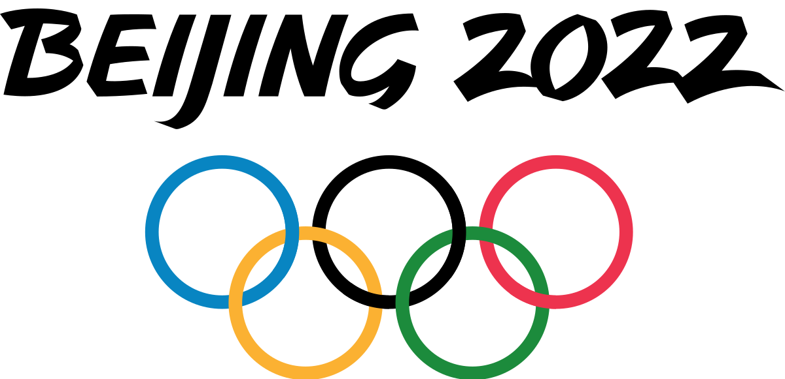

Die XXIV. Olympischen Winterspiele (chinesisch 2022年冬季奥林匹克运动会, Pinyin 2022 nián dōngjì Àolínpǐkè Yùndònghuì) werden vom 4. bis 20. Februar 2022 in der chinesischen Hauptstadt Peking ausgetragen. Die Winterspiele finden damit zum ersten Mal direkt hintereinander (2018, 2022) in zwei fernost-asiatischen Städten statt. Peking ist die erste Stadt, die sowohl Olympische Sommerspiele (2008) als auch Olympische Winterspiele austrägt.
| Land | Norwegen | Deutschland | China | USA | Schweden | Niederlande | Östereich | Schweiz |
| Gold | 16 | 12 | 9 | 8 | 8 | 8 | 7 | 7 |
| Silber | 8 | 10 | 4 | 10 | 5 | 5 | 7 | 2 |
| Bronze | 13 | 5 | 2 | 7 | 5 | 4 | 4 | 5 |